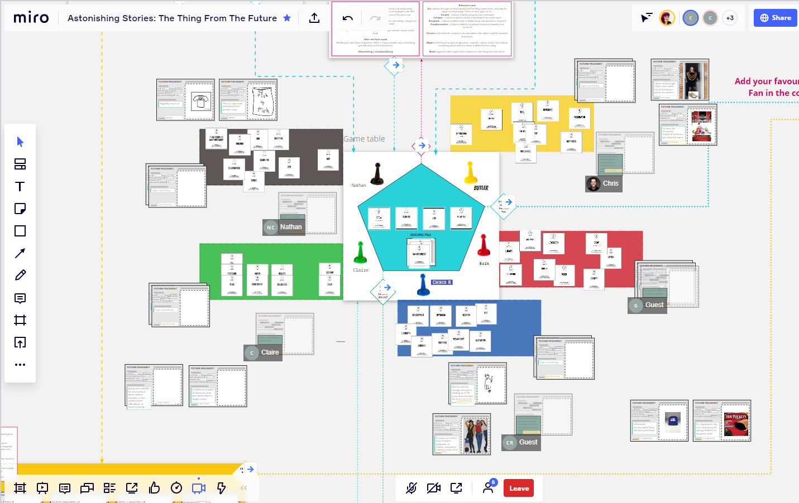

Your twitter archive
Check out @vaughn_tan's new newsletter, "#35: Patterning, herding, programming". https://uncertaintymindset.substack.com/p/35-patterning-herding-programming
 Wed Jul 01 14:04:15 +0000 2020
Wed Jul 01 14:04:15 +0000 2020
Check out @tomcritchlow's new post, "Quotebacks for Firefox is here!". http://tomcritchlow.com/2020/07/02/quotebacks-firefox/
Thu Jul 02 01:54:11 +0000 2020
Event coming up on Yak Collective discord in < 15 minutes! Yak Collective: Reza Negarestani's Intelligence & Spirit, Jul 01, 2020 08:00PM. Get invite link here: http://zpr.io/t47UH
Thu Jul 02 02:56:44 +0000 2020
Check out @anthilemoon's new post, "Inner child and inner critic: a battle for creativity". https://nesslabs.com/inner-child-and-inner-critic?utm_source=rss&utm_medium=rss&utm_campaign=inner-child-and-inner-critic
Thu Jul 02 15:26:01 +0000 2020
In 20 minutes, @alexdw5 and @hewhocutsdown host the #YakNewbie Q&A Chat on on the Yak Discord channel.
If you'd like to attend, become a Yak via the link:
https://www.yakcollective.org/join
Thu Jul 02 15:40:44 +0000 2020
Event coming up on Yak Collective discord in < 15 minutes! New Yak Q&A – Hosted by Alex Wagner and Jordan Peacock, Jul 02, 2020 09:00AM. Get invite link here: http://zpr.io/t47UH
Thu Jul 02 15:48:10 +0000 2020
Check out @anthilemoon's new post, "Quote the web with Quotebacks". https://nesslabs.com/quotebacks?utm_source=rss&utm_medium=rss&utm_campaign=quotebacks
Thu Jul 02 16:26:20 +0000 2020
Event coming up on Yak Collective discord in < 15 minutes! Online governance study group hosted by vgr, Jul 03, 2020 09:00AM. Get invite link here: http://zpr.io/t47UH
Fri Jul 03 15:50:58 +0000 2020
Check out the latest edition of the Yak Talk newsletter, "Yaks Do Innovation Consulting". https://yakcollective.substack.com/p/yaks-do-innovation-consulting
Fri Jul 03 18:31:23 +0000 2020
Check out the latest edition of the Yak Talk newsletter, "Reminder: Call for Project Contributors for Yak Project Proposals". https://yakcollective.substack.com/p/reminder-call-for-project-contributors
Fri Jul 03 19:31:09 +0000 2020
Check out @vgr's new newsletter, "After Westphalia: Introduction". https://breakingsmart.substack.com/p/after-westphalia-introduction
Sat Jul 04 03:46:10 +0000 2020
Event coming up on Yak Collective discord in < 15 minutes! #infrastructure chat with Darren, Jul 04, 2020 10:30AM. Get invite link here: http://zpr.io/t47UH
Sat Jul 04 17:22:29 +0000 2020
Event coming up on Yak Collective discord in < 15 minutes! Yak Innovation: Round 2 Planning Meeting, Jul 05, 2020 11:30AM. Get invite link here: http://zpr.io/t47UH
Sun Jul 05 18:19:06 +0000 2020
Event coming up on Yak Collective discord in < 15 minutes! Yak Chat led by Pamela Hobart, Jul 05, 2020 02:00PM. Get invite link here: http://zpr.io/t47UH
Sun Jul 05 20:50:28 +0000 2020
Check out @anthilemoon's new post, "50 lessons I learned from writing 50 newsletters". https://nesslabs.com/50-lessons-50-newsletters?utm_source=rss&utm_medium=rss&utm_campaign=50-lessons-50-newsletters
Sun Jul 05 22:26:18 +0000 2020
Check out @freeshreeda's new newsletter, "Internet Writer Workflows". https://shreeda.substack.com/p/internet-writer-workflows
Mon Jul 06 15:35:10 +0000 2020
Event coming up on Yak Collective discord in < 15 minutes! Yak chat hosted by Sachin Benny, Jul 06, 2020 04:00PM. Get invite link here: http://zpr.io/t47UH
Mon Jul 06 22:49:44 +0000 2020
What projects should the Yak Collective work on over the next year? (we’ve completed 2, with 4 more in flight, see link) https://www.yakcollective.org/projects/
Wed Jul 08 01:06:41 +0000 2020
RT @jfairbairn: @yak_collective Climate - transitioning the normies
Wed Jul 08 01:13:07 +0000 2020
Event coming up on Yak Collective discord in < 15 minutes! YAK CHAT: BUILD A RIGHT BRAIN / NATURE THEATRE, Jul 07, 2020 06:30PM. Get invite link here: http://zpr.io/t47UH
Wed Jul 08 01:25:19 +0000 2020
Check out @antlerboy's new post, "The Force in organisational life and becoming a Jedi — The Beginning". https://medium.com/@antlerboy/the-force-in-organisational-life-and-becoming-a-jedi-the-beginning-808805c1f672?source=rss-97852f5a56ae------2
Wed Jul 08 08:07:11 +0000 2020
Check out @vaughn_tan's new newsletter, "#36: Ready for the unexpected". https://uncertaintymindset.substack.com/p/36-ready-for-the-unexpected
Wed Jul 08 13:04:24 +0000 2020
Check out @tomcritchlow's new post, "Setting up a Discord Room for my Blog". http://tomcritchlow.com/2020/07/08/discord/
Wed Jul 08 19:54:25 +0000 2020
Check out @anthilemoon's new post, "Managing risk with the NASA Risk Matrix". https://nesslabs.com/nasa-risk-matrix?utm_source=rss&utm_medium=rss&utm_campaign=nasa-risk-matrix
Thu Jul 09 11:26:22 +0000 2020
Check out @anthilemoon's new post, "Fail like a scientist". https://nesslabs.com/fail-like-a-scientist?utm_source=rss&utm_medium=rss&utm_campaign=fail-like-a-scientist
Thu Jul 09 13:26:28 +0000 2020
Event coming up on Yak Collective discord in < 15 minutes! New Yak Q&A – Hosted by Alex Wagner and Jordan Peacock, Jul 09, 2020 09:00AM. Get invite link here: http://zpr.io/t47UH
Thu Jul 09 15:51:59 +0000 2020
Event coming up on Yak Collective discord in < 15 minutes! Online governance study group hosted by vgr, Jul 10, 2020 09:00AM. Get invite link here: http://zpr.io/t47UH
Fri Jul 10 15:53:56 +0000 2020
Check out the latest edition of the Yak Talk newsletter, "Yak Talk: Week of July 10th". https://yakcollective.substack.com/p/yak-talk-week-of-july-10th
Fri Jul 10 18:31:24 +0000 2020
Check out @vgr's new newsletter, "The Next Experiments in Elitism". https://breakingsmart.substack.com/p/the-next-experiments-in-elitism
Fri Jul 10 22:46:19 +0000 2020
Event coming up on Yak Collective discord in < 15 minutes! #infrastructure chat with Darren, Jul 11, 2020 10:30AM. Get invite link here: http://zpr.io/t47UH
Sat Jul 11 17:25:36 +0000 2020
Event coming up on Yak Collective discord in < 15 minutes! Yak Chat led by Pamela Hobart, Jul 12, 2020 02:00PM. Get invite link here: http://zpr.io/t47UH
Sun Jul 12 20:56:04 +0000 2020
Check out @tobyshorin's new post, "re: garden of forking memes". http://subpixel.space/entries/re-garden-of-forking-memes/
Sun Jul 12 22:16:10 +0000 2020
Event coming up on Yak Collective discord in < 15 minutes! Yak chat hosted by Sachin Benny, Jul 13, 2020 04:00PM. Get invite link here: http://zpr.io/t47UH
Mon Jul 13 22:49:29 +0000 2020
Check out @anthilemoon's new post, "Investing into the unknown with Lawrence Yeo". https://nesslabs.com/lawrence-yeo-interview?utm_source=rss&utm_medium=rss&utm_campaign=lawrence-yeo-interview
Tue Jul 14 15:26:15 +0000 2020
Event coming up on Yak Collective discord in < 15 minutes! YAK CHAT: BUILD A RIGHT BRAIN / NATURE THEATRE, Jul 14, 2020 06:30PM. Get invite link here: http://zpr.io/t47UH
Wed Jul 15 01:29:33 +0000 2020
Check out @vaughn_tan's new newsletter, "#37: Open space". https://uncertaintymindset.substack.com/p/37-open-space
Wed Jul 15 16:04:14 +0000 2020
Check out @anthilemoon's new post, "The Dunning–Kruger effect: you don’t know what you don’t know". https://nesslabs.com/dunning-kruger-effect?utm_source=rss&utm_medium=rss&utm_campaign=dunning-kruger-effect
Wed Jul 15 18:26:06 +0000 2020
Check out @tobyshorin's new post, "Come for the Network, Pay for the Tool". http://subpixel.space/entries/come-for-the-network-pay-for-the-tool/
Wed Jul 15 20:16:05 +0000 2020
Event coming up on Yak Collective discord in < 15 minutes! Yak Collective: Reza Negarestani's Intelligence & Spirit, Jul 15, 2020 08:00PM. Get invite link here: http://zpr.io/t47UH
Thu Jul 16 02:45:05 +0000 2020
RT @WabiSabiFutures: Favourite thing this week: facilitating #futurething sessions with the @yak_collective

Thu Jul 16 03:01:29 +0000 2020
Check out @anthilemoon's new post, "From closed mind to open mind". https://nesslabs.com/closed-mind-to-open-mind?utm_source=rss&utm_medium=rss&utm_campaign=closed-mind-to-open-mind
Thu Jul 16 10:26:03 +0000 2020
Check out @tomcritchlow's new post, "Opening up in Open Spaces". http://tomcritchlow.com/2020/07/16/salons/
Thu Jul 16 14:54:28 +0000 2020
In 20 minutes via Yak Discord, @alexdw5 and @quickdrawyall lead the Yak Newbie Chat, in which Jordan and Alex answer questions about how to participate in Yak Collective.
If interested, you can join Yak at http://www.yakcollective.org/join.
(We are meeting in the #general voice channel)
Thu Jul 16 15:44:17 +0000 2020
Event coming up on Yak Collective discord in < 15 minutes! New Yak Q&A – Hosted by Alex Wagner and Jordan Peacock, Jul 16, 2020 09:00AM. Get invite link here: http://zpr.io/t47UH
Thu Jul 16 15:45:49 +0000 2020
Event coming up on Yak Collective discord in < 15 minutes! Discussion on Structural Design of Yak Network Map - hosted by Vinay Débrou, Jul 16, 2020 10:00AM. Get invite link here: http://zpr.io/t47UH
Thu Jul 16 16:47:43 +0000 2020
Event coming up on Yak Collective discord in < 15 minutes! Online governance study group hosted by vgr, Jul 17, 2020 09:00AM. Get invite link here: http://zpr.io/t47UH
Fri Jul 17 15:46:07 +0000 2020
This week in Yak Talk, the weekly YC newsletter:
https://yakcollective.substack.com/p/are-k-pop-stans-the-future-of-activism
Fri Jul 17 20:02:22 +0000 2020
Check out the latest edition of the Yak Talk newsletter, "Are K-Pop Stans the Future of Activism?". https://yakcollective.substack.com/p/are-k-pop-stans-the-future-of-activism
Fri Jul 17 20:31:06 +0000 2020
Check out @vgr's new newsletter, "Operating in Time". https://breakingsmart.substack.com/p/operating-in-time
Fri Jul 17 22:46:20 +0000 2020
Event coming up on Yak Collective discord in < 15 minutes! #Final-Frontiers Discussion Week 1, Jul 18, 2020 09:30AM. Get invite link here: http://zpr.io/t47UH
Sat Jul 18 16:21:27 +0000 2020
Event coming up on Yak Collective discord in < 15 minutes! #infrastructure chat with Darren, Jul 18, 2020 10:30AM. Get invite link here: http://zpr.io/t47UH
Sat Jul 18 17:21:42 +0000 2020
Check out @p_millerd's new post, "The best advice on working remotely your boss doesn’t want you to see". https://think-boundless.com/remote-work-tips/?utm_source=rss&utm_medium=rss&utm_campaign=remote-work-tips
Sun Jul 19 16:43:10 +0000 2020
Event coming up on Yak Collective discord in < 15 minutes! Yak chat hosted by Sachin Benny, Jul 20, 2020 04:00PM. Get invite link here: http://zpr.io/t47UH
Mon Jul 20 22:49:58 +0000 2020
Event coming up on Yak Collective discord in < 15 minutes! YAK CHAT: BUILD A RIGHT BRAIN / NATURE THEATRE, Jul 21, 2020 06:30PM. Get invite link here: http://zpr.io/t47UH
Wed Jul 22 01:21:39 +0000 2020
Check out @anthilemoon's new post, "GPT-3 and the future of human productivity". https://nesslabs.com/gpt-3-future-productivity?utm_source=rss&utm_medium=rss&utm_campaign=gpt-3-future-productivity
Wed Jul 22 10:26:25 +0000 2020
Check out @vaughn_tan's new newsletter, "#38: Agathonicity". https://uncertaintymindset.substack.com/p/38-agathonicity
Wed Jul 22 15:04:08 +0000 2020
Event coming up on Yak Collective discord in < 15 minutes! Yak Collective: Reza Negarestani's Intelligence & Spirit, Jul 22, 2020 08:00PM. Get invite link here: http://zpr.io/t47UH
Thu Jul 23 03:00:03 +0000 2020
Check out @bentonheimsath's new post, "Cross-Laminated Timber". https://www.bentonheimsath.com/writing/cross-laminated-timber
Thu Jul 23 03:05:26 +0000 2020
Check out @antlerboy's new post, "Debora, please see the twitter thread started by Sonja Blignaut posting this: https://twitter.com/so". https://medium.com/@antlerboy/debora-please-see-the-twitter-thread-started-by-sonja-blignaut-posting-this-https-twitter-com-so-1583ee85e3c0?source=rss-97852f5a56ae------2
Thu Jul 23 07:07:18 +0000 2020
Check out @anthilemoon's new post, "How to evaluate the validity and reliability of your mental models". https://nesslabs.com/validity-reliability-mental-models?utm_source=rss&utm_medium=rss&utm_campaign=validity-reliability-mental-models
Thu Jul 23 09:26:03 +0000 2020
Check out @anthilemoon's new post, "Temporal discounting: the battle between present and future self". https://nesslabs.com/temporal-discounting?utm_source=rss&utm_medium=rss&utm_campaign=temporal-discounting
Thu Jul 23 12:26:14 +0000 2020
Event coming up on Yak Collective discord in < 15 minutes! New Yak Q&A – Hosted by Alex Wagner and Jordan Peacock, Jul 23, 2020 09:00AM. Get invite link here: http://zpr.io/t47UH
Thu Jul 23 15:49:50 +0000 2020
Check out @tomcritchlow's new post, "The Indie Consulting Business Model Canvas V0.1". http://tomcritchlow.com/2020/07/23/indie-biz-canvas/
Thu Jul 23 17:54:05 +0000 2020
Check out @tomcritchlow's new post, "Some notes on Thinking in Public". http://tomcritchlow.com/2020/07/23/thinking-in-public/
Thu Jul 23 18:54:28 +0000 2020
Check out @tomcritchlow's new post, "Updates to Quotebacks". http://tomcritchlow.com/2020/07/24/quotebacks-update/
Fri Jul 24 14:54:05 +0000 2020
Event coming up on Yak Collective discord in < 15 minutes! Online governance study group hosted by vgr, Jul 24, 2020 09:00AM. Get invite link here: http://zpr.io/t47UH
Fri Jul 24 15:51:19 +0000 2020
This week in Yak Talk, our weekly newsletter:
• GPT-3 and "The New Fake Intelligence"
• The Democratization of Simulation
• Envisioning Transnational Governments
As well as the first known YC irl meet-up üò∑üèû
https://yakcollective.substack.com/p/gpt-3-and-the-new-fake-intelligence
Fri Jul 24 16:38:23 +0000 2020
Check out the latest edition of the Yak Talk newsletter, "GPT-3 and "The New Fake Intelligence"". https://yakcollective.substack.com/p/gpt-3-and-the-new-fake-intelligence
Fri Jul 24 17:31:24 +0000 2020
Check out @vgr's new newsletter, "Thinking Out Loud: Year One". https://breakingsmart.substack.com/p/thinking-out-loud-year-one
Fri Jul 24 20:46:15 +0000 2020
Event coming up on Yak Collective discord in < 15 minutes! Final Frontiers Week 2 Discussion, Jul 25, 2020 09:30AM. Get invite link here: http://zpr.io/t47UH
Sat Jul 25 16:15:24 +0000 2020
Event coming up on Yak Collective discord in < 15 minutes! #infrastructure chat with Darren, Jul 25, 2020 10:30AM. Get invite link here: http://zpr.io/t47UH
Sat Jul 25 17:17:59 +0000 2020
Check out @HiredThought's new post, "Ten Heuristics for Bad Times". https://hiredthought.com/2020/07/26/ten-heuristics-for-bad-times/
Sun Jul 26 05:38:12 +0000 2020
Event coming up on Yak Collective discord in < 15 minutes! Yak chat hosted by Sachin Benny, Jul 27, 2020 04:00PM. Get invite link here: http://zpr.io/t47UH
Mon Jul 27 22:55:44 +0000 2020
Event coming up on Yak Collective discord in < 15 minutes! YAK CHAT: BUILD A RIGHT BRAIN / NATURE THEATRE, Jul 28, 2020 06:30PM. Get invite link here: http://zpr.io/t47UH
Wed Jul 29 01:27:01 +0000 2020
Check out @vaughn_tan's new newsletter, "#39: Remove the plow and hive". https://uncertaintymindset.substack.com/p/39-remove-the-plow-and-hive
Wed Jul 29 14:04:22 +0000 2020
Event coming up on Yak Collective discord in < 15 minutes! Yak chat hosted by Jordan Peacock, Jul 29, 2020 08:00PM. Get invite link here: http://zpr.io/t47UH
Thu Jul 30 02:53:22 +0000 2020
Event coming up on Yak Collective discord in < 15 minutes! Yak Collective: Reza Negarestani's Intelligence & Spirit, Jul 29, 2020 08:00PM. Get invite link here: http://zpr.io/t47UH
Thu Jul 30 02:53:23 +0000 2020
In half an hour, @alexdw5 leads the weekly New Yak Q&A Chat. Join via the Discord in the #general voice channel.
If you're not on the Yak Discord yet, you can join here:
http://www.yakcollective.org/join
Thu Jul 30 15:34:14 +0000 2020
Event coming up on Yak Collective discord in < 15 minutes! New Yak Q&A – Hosted by Alex Wagner and Jordan Peacock, Jul 30, 2020 09:00AM. Get invite link here: http://zpr.io/t47UH
Thu Jul 30 15:50:50 +0000 2020
RT @p_millerd: Congrats @vinaydebrou for his @yak_collective project!
Emergent Ventures India, second cohort of winners - https://t.co/iU3…
Fri Jul 31 15:14:43 +0000 2020
Event coming up on Yak Collective discord in < 15 minutes! Online governance study group hosted by vgr, Jul 31, 2020 09:00AM. Get invite link here: http://zpr.io/t47UH
Fri Jul 31 15:54:56 +0000 2020
Check out the latest edition of the Yak Talk newsletter, "Chasing Tails, Part One". https://yakcollective.substack.com/p/chasing-tails-part-one
Fri Jul 31 19:31:27 +0000 2020
Check out @vgr's new newsletter, "Operating in Time - 2". https://breakingsmart.substack.com/p/operating-in-time-2
Sat Aug 01 03:46:23 +0000 2020